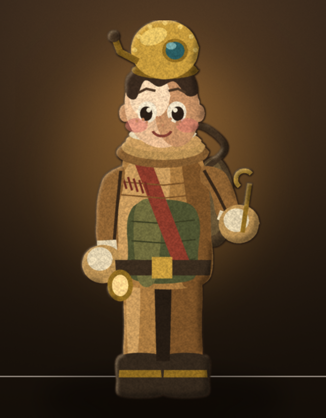
동화 삽화 storybook · 약 4.2등신
따뜻한 황토 빛에 잠긴 손그림. 얼굴을 전부 그리고 연필 결을 남긴다.
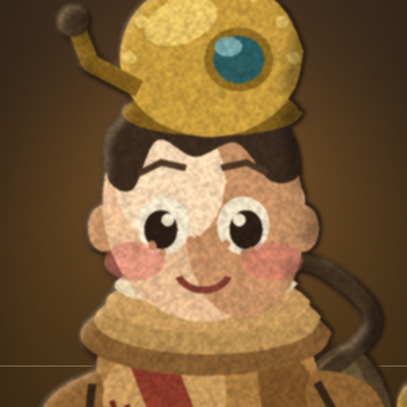
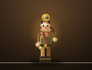
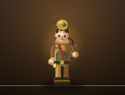
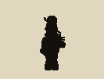
- 표정
- 얼굴이 직접 말한다 — 눈동자·눈썹·입·주근깨·볼 홍조. 여섯 중 감정 폭이 가장 넓다.
- 8역할 확장
- 같은 덩어리에 머리 물건 하나 + 앞치마 색 하나 + 반복 무늬 하나를 바꾼다. 앞치마 색이 역할 색이 된다.
- 제작 비용
- ●●●●○ 가장 비싸다. 결·음영·손그림 선을 역할마다 다시 얹어야 하고 애니메이션이 특히 비싸다.
- 위험
- 세부가 많아 70px에서 뭉친다. 지금도 여섯 중 축소 판독이 가장 약하다.
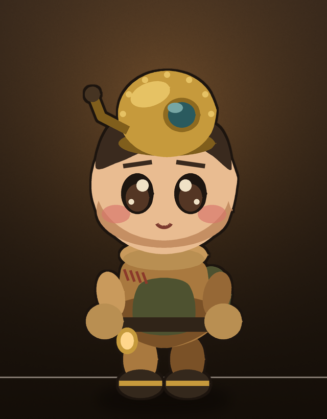
통통 치비 cozy chibi · 약 2.4등신
머리가 크고 선이 굵고 색이 평평하다. 모바일 아늑한 게임의 정석.
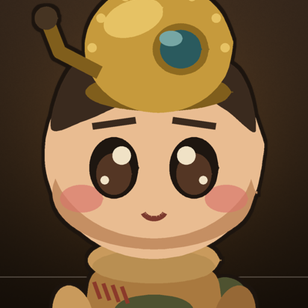
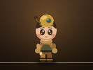
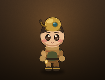
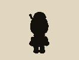
- 표정
- 큰 눈과 눈썹 각도. 눈 하나가 화면의 큰 면적이라 70px에서도 기분이 보인다.
- 8역할 확장
- 머리 물건과 몸통 색만 갈아도 구분된다. 머리가 커서 모자·고글·마스크가 잘 읽힌다 — 8역할에 가장 유리하다.
- 제작 비용
- ●●○○○ 가장 싸다. 질감이 없어 색만 갈면 되고 애니메이션도 단순하다.
- 위험
- 흔하다. "어디서 본 모바일 게임"으로 읽힐 수 있고 심해의 무게감이 약해진다.
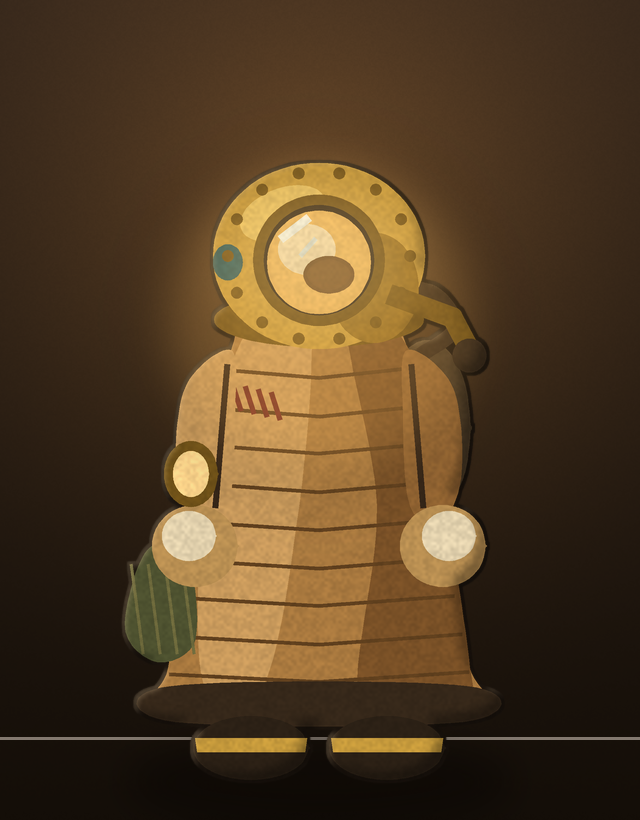
잠수복이 캐릭터다 suit-first · 체형 없음
사람의 몸을 지운다. 누빈 자루 하나와 둥근 헬멧, 그리고 창 안의 불빛.
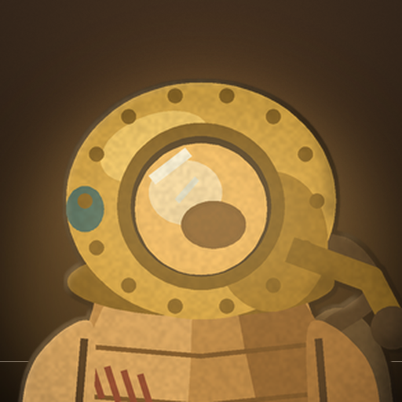
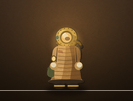
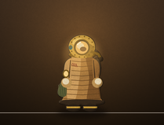
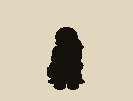
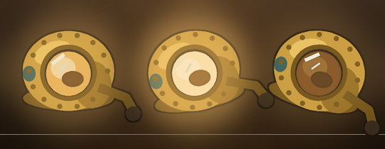
- 표정
- 얼굴이 없다. 창 불빛의 밝기·색·기울기가 전부. 불빛 속에 잠긴 흐릿한 그림자가 "안에 사람이 있다"의 유일한 단서다.
- 8역할 확장
- 실루엣과 등짐으로만 가른다. 헬멧 모양·자루 길이·들고 있는 물건. 얼굴이 없어 구분 단서가 셋뿐이라 8명이 되면 빠듯하다.
- 제작 비용
- ●●○○○ 싸다. 얼굴 애니메이션이 없고 불빛은 색 하나로 바꾼다. 감정 표현이 런타임 변수가 되는 유일한 안이다.
- 위험
- 정이 붙지 않을 수 있다. "지켜 주고 싶은가"에 가장 불리한 안이자, 세계관에는 가장 정직한 안.
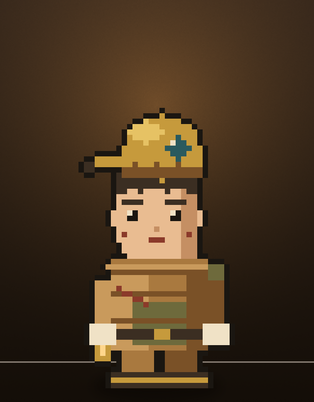
픽셀 도트 38×56 그리드 · 14색
게임 크기에서 1:1로 찍는다. 축소가 없으니 뭉개질 것도 없다.
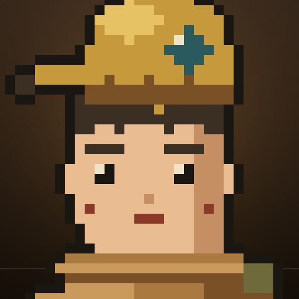
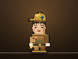
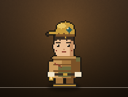
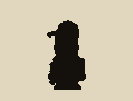
- 표정
- 눈 2×2 · 눈썹 4×1 · 입 3×1. 점 몇 개로 바꾸므로 표정 교체가 사실상 공짜다.
- 8역할 확장
- 머리 부분 8종 + 몸통 색 8종의 조각 교체. 조합 폭발에 가장 강하다(각인 파츠도 점 몇 개).
- 제작 비용
- ●○○○○ 가장 싸다. 애니메이션도 프레임당 점 몇 개. 대신 사람이 한 점씩 찍어야 하므로 절차 생성이 잘 안 먹는다.
- 위험
- 평면 단면 거점의 큰 화면과 해상도가 싸운다. 배경도 전부 도트로 가야 하므로 이 선택은 배경 담당까지 바꾼다.
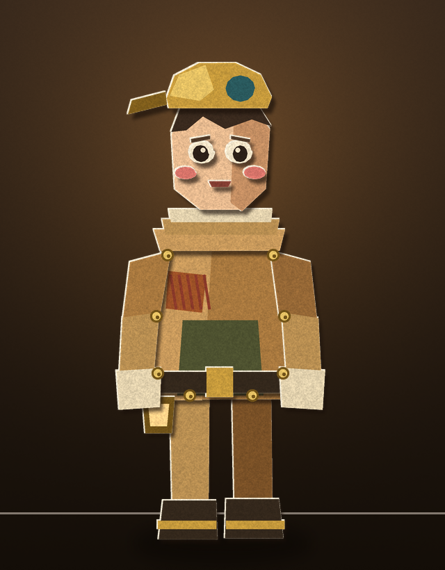
종이 오림 paper cutout · 관절 핀 인형
판지를 오려 겹치고 놋쇠 핀으로 이었다. 그림자극과 민속 공예의 결.
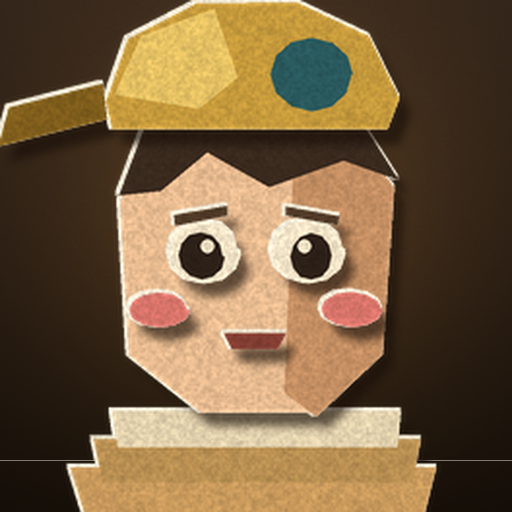
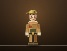
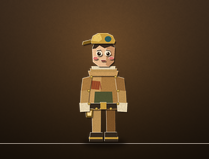
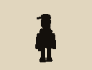
- 표정
- 얼굴 조각을 갈아 끼운다. 눈·눈썹·입이 따로 오려 붙인 조각이라 교체가 곧 표정이다.
- 8역할 확장
- 같은 몸판에 조각만 바꿔 붙인다. 부족 의상도 덧댄 조각 하나로 끝난다 — 8역할 확장이 개념적으로 가장 깔끔하다.
- 제작 비용
- ●●○○○ 싸다. 관절이 핀이라 애니메이션이 조각 회전으로 끝난다(2D 뼈대와 그대로 맞는다).
- 위험
- 납작해서 심해의 압력과 무게가 안 실린다. 귀여움보다 공예 쪽으로 기운다.
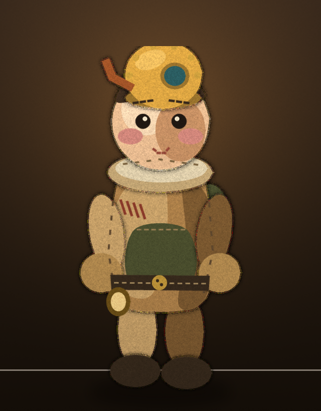
펠트 인형 felted wool · 손으로 만든 물건
양모를 뭉쳐 바늘로 찔러 만든 인형. 따뜻함이 색이 아니라 재질에서 나온다.
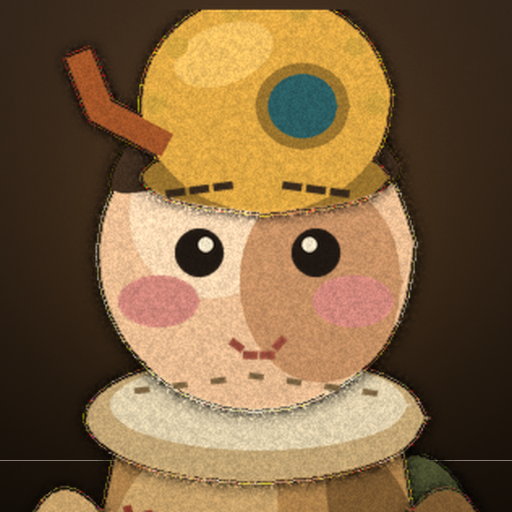
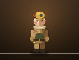
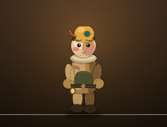
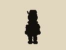
- 표정
- 실 눈(매듭)과 바느질 한 줄. 표정 폭은 좁지만 가만히 있어도 보호 본능을 부른다.
- 8역할 확장
- 펠트 조각을 덧대고 실 색을 바꾼다. 부족 표식이 곧 바느질 무늬가 된다(성경의 '몸의 상실'을 꿰맨 자국으로 번역할 수 있다).
- 제작 비용
- ●●●○○ 중간. 보풀과 실밥이 절차로 생성되지만 조각마다 다시 돌려야 한다. 애니메이션에서 보풀이 떨릴 위험.
- 위험
- 재질이 강해서 세계관이 "무서운 심해"가 아니라 "인형극"이 된다. 2막·3막의 공포와 충돌할 수 있다.
제작 방식: 전부 Python + Pillow 절차 생성(tools/gen_char_concepts.py).
생성 AI 이미지는 한 점도 쓰지 않았다(교본 07 §3-4 일관성 함정 · §6 공개 부담).
기존 3D 렌더를 베이스로 쓰지 않은 것은 의도다 — 변형 a·b·c가 전부 같은 렌더 위에 후처리만 갈아 끼운 탓에
같은 오독(얼굴 최소·극단 대비)을 세 번 물려받았기 때문이다(docs/refs/REF_ART_FLAT_FOLK.md §0).
여섯은 완성품이 아니라 방향 시안이다. 고른 하나만 제대로 만든다.